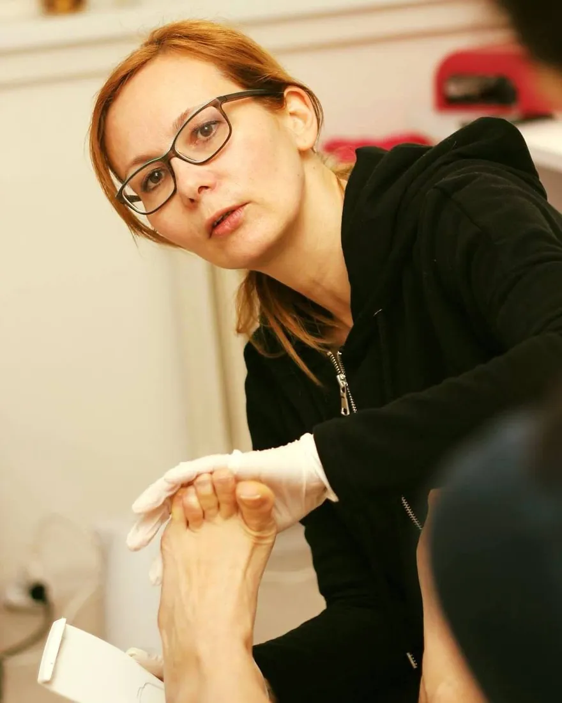

Pedikúra · Banská Bystrica, Janka Kráľa 3
Zdravé a pekné nohy v rukách skúsenej pedikérky
Ošetrím zarastené nechty, otlaky aj popraskané päty. A keď nič netrápi, pripravím vaše nohy do sandálov, na ples alebo len tak pre radosť. Šetrne, sterilne a bez čakania v čakárni.
Do konca roka mám plno. Nových klientov zapisujem do poradovníka, najskôr na január 2027 – napíšte mi SMS a ozvem sa, keď sa uvoľní miesto.
- Zdravotná sestra s praxou v zdravotníctve
- 10 rokov v pedikúre
- Tepelne sterilizované nástroje
- 1 000+ ošetrení ročne – bez reklamy, len na odporúčanie

Vzdelanie a kurzy
Všetky kurzy- Zdravotná sestraStredná zdravotnícka škola
- Manažment diabetickej nohyAkreditovaný kurz
- Zarastajúce nechty bez operácieIMKOR špony a technika Recann
- Profesionálna pedikúra – podológiaOdborná skupina IMKOR
Nemusí nič bolieť
Pekné nohy si zaslúžite aj bez dôvodu
Väčšina ľudí príde, až keď niečo bolí. Pravidelná pedikúra raz za 4–6 týždňov je pritom najlepšia prevencia – a príjemná hodina pre seba.
Jar a leto
Do sandálov bez hanby
Hladké päty a upravené nechty, ktoré pokojne ukážete na kúpalisku aj v meste. Na leto sa ozvite včas.
Zima
Plesy, svadby, oslavy
K šatám a lodičkám patria upravené nohy. Gél lak vydrží celú plesovú sezónu bez starostí.
Pred cestou
Dovolenka pri mori
Pedikúra s gél lakom týždeň pred odchodom a na pláži už na nohy nemusíte myslieť.
Kedykoľvek
Len tak, pre seba
Teplý kúpeľ, hodina pokoja a ľahší krok. Chodia ku mne ženy aj muži – pedikúra nie je len o laku.
S čím pomôžem
Prídete s problémom, odchádzate s úľavou
- Zarastajúce nechtyNecht postupne narovnám tenkou nalepenou sponou alebo špeciálnym gélom, aby prestal zarastať. Keď prídete včas, väčšinou sa vyhnete zákroku na chirurgii, kde sa zarastený necht rieši odstránením jeho časti alebo celého nechta.
- Popraskané a tvrdé pätyOdstránim zrohovatenú kožu, päty zostanú hladké týždne.
- Otlaky a kurie okáBezbolestné odstránenie a odľahčenie tlaku.
- Zhrubnuté a zafarbené nechtyZbrúsim ich a pri podozrení na plesňové ochorenie poradím ďalší postup.
- Diabetická nohaAko zdravotná sestra s kurzom Manažment diabetickej nohy pracujem pomaly a opatrne.
- Už sa k nohám ťažko zohnetePostarám sa o nechty aj pokožku – pravidelne, v pokoji a bez ponáhľania.
Cenník
Jasné ceny, žiadne prekvapenia
Lakovanie aj gél lak si môžete pridať ku každej pedikúre.
Stálym klientom ceny nezvyšujem – ani od nového roka.
Pedikúra
- Pedikúra mokrá, kombinovaná30 €Kúpeľ nôh, úprava nechtov a odstránenie zrohovatenej kože.
- Pedikúra medicinálna, suchá30 €Bez namáčania, prístrojom – šetrná aj pre citlivú a diabetickú nohu.
- Švajčiarska pedikúra33 €
Zarastené a problémové nechty
- Lepenie IMKOR špony20 €Na necht nalepím tenkú pružnú sponu, ktorá ho postupne narovná, aby prestal zarastať do kože. Bez rezania.
- Následné osadenie IMKOR špony15 €Výmena alebo úprava spony pri ďalšej návšteve, kým necht nedorastie správne.
- Tamponáda, dezinfekcia10 €Pod bolestivý zarastajúci roh nechta vložím jemný tampón s dezinfekciou, aby prestal tlačiť.
- Brúsenie hrubých nechtov18 €Zhrubnuté nechty šetrne zbrúsim, aby netlačili v topánkach.
Lakovanie
- Lakovanie s odlakovaním7 €
- Lakovanie francúzske10 €
- Gél lak12 €Vydrží približne 4–6 týždňov.
Mimo pracovných dní
- Termín cez víkend alebo sviatok+15 €Po dohode, ak vám pracovné dni nevyhovujú. Príplatok sa pripočíta k cene ošetrenia.
Platiť môžete kartou, QR kódom alebo v hotovosti. Ceny platné od 1. 1. 2025 do 31. 12. 2026.
Darčekový poukaz
Darujte ľahké nohy
Pre mamu, babku, partnera aj kolegyňu. Poukaz pripravím na konkrétne ošetrenie alebo na sumu, ktorú si vyberiete.
Ako to funguje
- Na pedikúru, pedikúru s gél lakom alebo na ľubovoľnú sumu
- Napíšte SMS – poukaz si vyzdvihnete v salóne
- Platiť môžete kartou, QR kódom alebo v hotovosti
- Obdarovaný si termín dohodne sám, keď mu to vyhovuje
O mne
Zdravotná sestra, ktorá sa venuje nohám
Som vyštudovaná zdravotná sestra. Skôr ako som si otvorila PedeDiva, pracovala som v zdravotníctve – odtiaľ mám dôraz na hygienu, sterilitu a pokojný prístup ku každému, kto si ku mne sadne.
Pedikúre sa venujem 10 rokov a stále sa vzdelávam, najmä v podológii a starostlivosti o diabetickú nohu. Certifikáty vám rada ukážem v salóne.
Lenka Mikušová
- Stredná zdravotnícka škola – zdravotná sestraPrax v zdravotníctve pred založením salónu
- Profesionálna pedikúra – podológiaOdborná skupina Profesionálna pedikúra-podológia, IMKOR
- Manažment diabetickej nohyAkreditované vzdelávacie stredisko Centrum pedikúry
- Podologické ošetrenie diabetickej nohy, hyperkeratóza a otlakyOdborný webinár
- Ošetrenie zarasteného nechta technikou RecannTeoretická a praktická časť
- Superficiálna onychomykóza – „žabinec“ na nechteOnline školenie, 2024
- Reflexná masáž chodidlaAkadémia Plus Zvolen, 16 hodín, 2017
- Druhý kongres profesionálnej pedikúry a podológieDiplom za účasť
- Produktový seminár podológieCertifikát o absolvovaní
Ako to prebieha
Od objednania po ľahké nohy
Napíšete mi SMS
Zapíšem si vás do poradovníka a ozvem sa s termínom. Deň pred návštevou vám pošlem správu, či termín platí.
Prídete a oddýchnete si
Parkovanie zadarmo priamo pri budove. Nástroje vyberám zo sterilizátora priamo pred vami.
Odchádzate s ľahkými nohami
Poradím vám, ako sa o nohy starať doma, a ak chcete, rovno si dohodneme ďalší termín.
Otázky
Než prídete
Bolí pedikúra?
Nie. Pracujem šetrne a priebežne sa pýtam. Ak ošetrujem niečo citlivé, poviem vám to vopred.
Ako sú sterilizované nástroje?
Ako zdravotná sestra na hygienu nedám dopustiť. Každý klient dostane nástroje sterilizované v tepelnom sterilizátore a vyberám ich priamo pred vami.
Chodia k vám aj muži?
Samozrejme. Pedikúra je pre každého, kto chce mať zdravé a upravené nohy – s lakom aj bez neho.
Môžem prísť s lakom na nechtoch?
Áno. Klasický lak odstránim pri lakovaní, odlakovanie je v cene. Ak máte gél lak z iného salónu, spomeňte to pri objednávaní, nech si vyhradím čas. Ak chcete, rovno vám nanesiem nový lak alebo gél lak.
Musím so zarasteným nechtom k lekárovi?
Ak je prst silno zapálený, hnisá alebo máte horúčku, áno – vtedy patrí k lekárovi. Ak však necht len tlačí a bolí, príďte čím skôr ku mne. Šponou alebo tamponádou ho väčšinou vyriešim bez rezania a vyhnete sa tomu, aby vám ho na chirurgii čiastočne alebo celý odstránili.
Ošetrujete aj diabetikov?
Áno. Som zdravotná sestra a absolvovala som kurz Manažment diabetickej nohy aj webinár o podologickom ošetrení diabetickej nohy. Prosím, spomeňte to pri objednávaní.
Dá sa prísť cez víkend alebo sviatok?
Áno, po dohode. Za termín mimo pracovných dní je príplatok 15 € k cene ošetrenia.
Dá sa kúpiť darčekový poukaz?
Áno. Poukaz pripravím na konkrétne ošetrenie alebo na sumu podľa vás. Stačí napísať SMS a vyzdvihnúť si ho v salóne.
Ako rýchlo sa dostanem na termín?
Do konca roka 2026 mám plno – kalendár mi napĺňajú stáli klienti, ktorí chodia pravidelne. Nových klientov zapisujem do poradovníka – najskôr to vidím na január 2027, presný termín vám ale zatiaľ sľúbiť neviem. Napíšte mi SMS a ozvem sa, keď sa uvoľní miesto.
Ako zruším alebo presuniem termín?
Napíšte SMS čo najskôr, aspoň 24 hodín vopred – váš termín tak môže dostať niekto, kto čaká. Bez poplatku.
Kontakt
Teším sa na vás v Banskej Bystrici
Do konca roka mám plno. Nových klientov zapisujem do poradovníka – najskôr to vidím na január 2027, ale istý termín zatiaľ sľúbiť neviem. Napíšte mi SMS a ozvem sa, keď sa uvoľní miesto.
Adresa
Janka Kráľa 3, 974 01 Banská Bystrica
Parkovanie zadarmo priamo pri budove.
Navigovať v Mapách GoogleOtváracie hodiny
Len na objednávku- Pondelok – Piatok
- 8.00 – 17.00
- Víkend a sviatky
- po dohode, +15 €